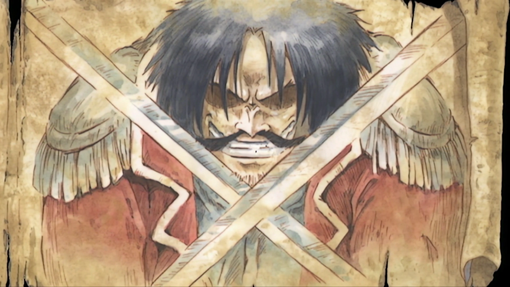
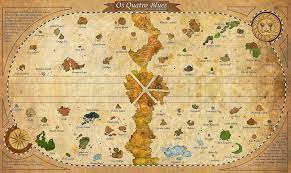
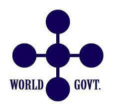
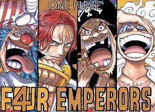

What is the One Piece

Wealth, fame, power. The world had it all won by one man: the Pirate King, Gold Roger. At his death, the words he spoke drove countless men out to sea.
"My treasure? It's yours if you want it. Find it! I left all the world has there!"
And so men set sights on the Grand Line, in pursuit of their dreams. The world has truly entered a Great Pirate Era!
The world of One Piece

There are five seas in the world the East, North, South, West blues and the Grand Line. The final treasure that Gol D Roger left behind is waiting somewhere at end of the Grand Line at the island of Laughtale.
The World Powers
There are three major powers in the world of One Piece.
The World Government

The world Govenment is a collection of 170 kingdoms united under a set of world leaders
The Warlords

The Yonkos
